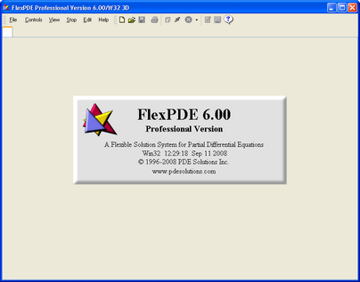

|
Starting FlexPDE |

  
|
|
Starting FlexPDE |
|
Windows
The FlexPDE installation program will place a FlexPDE icon on your desktop. You can start FlexPDE merely by double-clicking this icon. Alternatively, you can use the File Manager to navigate to the folder where FlexPDE was installed, and then double-click on the FlexPDE executable.
The installation program will also create an association of the ".pde" extension with the installed FlexPDE executable, so that FlexPDE can be started merely by double-clicking a script file in the file manager.
Mac OSX
FlexPDE is installed in the "Applications | FlexPDE6" folder by default, but you can choose to install it in any location you wish. Navigate to this folder and open the flexpde6 application.
The installation program will also create an association of the ".pde" extension with the installed FlexPDE executable, so that FlexPDE can be opened merely by double-clicking a script file in the Finder.
Linux
FlexPDE is installed in the directory you choose when extracting the archive. You can start FlexPDE by typing a command line in a console window, or from the file manager by navigating to the installation directory and opening the flexpde6 application.
Association of the ".pde" extension with flexpde6 can be made manually using the standard procedures of the operating system. You can also place a FlexPDE icon on your desktop using the "fpde6icon.png" file included in the installation files.
The Sign-On Screen
Whatever method you use to invoke FlexPDE, you will see a screen like this:

The display banner reports "FlexPDE", the version number and date of creation of the running version of FlexPDE.
Whenever a license has been acquired*, the display banner will show the class of the user's license (Student or Professional). The window caption bar will also report the platform version and license level, with "1D", "2D" or 3D", depending on the licensing level of the running program. Temporary licenses will display the time remaining in the license.
The window presents a standard menu bar and a tool bar, most items of which at this point are disabled.
---------------------------------------------------------------
* Note: Software keys and dongle licenses are read at invocation of FlexPDE. Network licenses are not read until a problem is run; at that time, a license of the required level, 1D, 2D or 3D will be requested from the network.
Page url: index.html?gettingstarted2.html